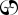

Glosariusz¶
Słownik słów kluczowych, podstawowych pojęć oraz slangu.
- Abandon¶
To turn a face-up ongoing scheme card face down and put it on the bottom of its owner’s scheme deck. See rule 701.25, "Abandon."
- Ability Word¶
An italicized word with no rules meaning that ties together abilities on different cards that have similar functionality. See rule 207.2c.
- Absorb¶
A keyword ability that prevents damage. See rule 702.63, "Absorb."
- Active Player, Nonactive Player Order¶
A system that determines the order by which players make choices if multiple players are instructed to make choices at the same time. See rule 101.4. This rule is modified for games using the shared team turns option; see rule 805.6.
- Active Team¶
The team whose turn it is in a game using the shared team turns option. See rule 805.4a.
- Additional Cost¶
A cost a spell may have that its controller may pay (or, in some cases, must pay) in addition to its mana cost to cast that spell. See rule 117, "Costs," and rule 601, "Casting Spells."
- Affinity¶
A keyword ability that reduces how much mana you need to spend to cast a spell. See rule 702.40, "Affinity."
- Afflict¶
A keyword ability that makes the defending player lose life for blocking. See rule 702.129, "Afflict."
- Aktywny gracz (Active Player)¶
Gracz, którego tura aktualnie trwa. Patrz zasada 102.1.
- Aktywować (Activate)¶
To put an activated ability onto the stack and pay its costs, so that it will eventually resolve and have its effect. See rule 602, "Activating Activated Abilities."
- Alternating Teams Variant¶
A multiplayer variant played among two or more teams of equal size. See rule 811, "Alternating Teams Variant."
- Alternative Cost¶
A cost a spell may have that its controller can pay rather than paying its mana cost. See rule 117, "Costs," and rule 601, "Casting Spells."
- Amplify¶
A keyword ability than can have a creature enter the battlefield with +1/+1 counters on it. See rule 702.37, "Amplify."
- Anchor Word¶
A word that precedes one of two abilities a permanent may enter the battlefield with. See rule 614.12b.
- Annihilator¶
A keyword ability that can make a creature particularly brutal when it attacks. See rule 702.85, "Annihilator."
- Ante¶
A zone used only when playing „for keeps.”
To put a card into the ante zone. See rule 407, "Ante."
- Antyklątwa¶
A keyword ability that precludes a permanent or player from being targeted by an opponent. See rule 702.11, "Hexproof."
- Any Target¶
A spell or ability may require „any target.” „Any target” is the same as „target creature, player, or planeswalker.” See rule 114.4.
- APNAP Order¶
- Archenemy¶
A casual variant in which a team of players faces off against a single opponent strengthened with powerful scheme cards. See rule 904, "Archenemy."
A player in an Archenemy game who is playing with a scheme deck.
- Artifact¶
A card type. An artifact is a permanent. See rule 301, "Artifacts."
- Artifact Creature¶
A combination of artifact and creature that’s subject to the rules for both. See rule 301, "Artifacts," and rule 302, "Creatures."
- Artifact Land¶
A combination of artifact and land that’s subject to the rules for both. Artifact lands can only be played as lands, not cast as spells. See rule 301, "Artifacts," and rule 305, "Lands."
- Artifact Type¶
A subtype that’s correlated to the artifact card type. See rule 301, "Artifacts." See rule 205.3g for the list of artifact types.
- As Though¶
Text used to indicate that the game, for some specific purpose, treats a condition as true even though it’s not. See rule 609.4.
- Ascend¶
A keyword causing a player to get the designation of the city’s blessing once they control ten permanents. See rule 702.130, "Ascend."
- Assemble¶
Assemble is a keyword action in the Unstable set that puts Contraptions onto the battlefield. Cards and mechanics from the Unstable set aren’t included in these rules.
- Assign Combat Damage¶
To determine how an attacking or blocking creature will deal its combat damage. See rule 510, "Combat Damage Step."
- Assist¶
A keyword ability that lets another player help you pay for a spell. See rule 702.131, "Assist."
- At End of Turn (Obsolete)¶
A trigger condition printed on abilities that triggered at the beginning of the end step (which is not the last thing to happen in the turn). Cards that were printed with that text have received errata in the Oracle card reference to say „at the beginning of the end step” or „at the beginning of the next end step.” See rule 513, "End Step."
- Attach¶
To move an Aura, Equipment, or Fortification onto another object. See rule 701.3, "Attach."
- Attack¶
To send a creature into combat offensively. A creature can attack a player or a planeswalker. See rule 508, "Declare Attackers Step."
- Attack Alone¶
A creature „attacks alone” if it’s the only creature declared as an attacker during the declare attackers step. A creature „is attacking alone” if it’s attacking but no other creatures are. See rule 506.5.
- Attack Left Option¶
An option that may be used in certain multiplayer variants. See rule 803, "Attack Left and Attack Right Options."
- Attack Multiple Players Option¶
An option that may be used in certain multiplayer variants. See rule 802, "Attack Multiple Players Option."
- Attack Right Option¶
An option that may be used in certain multiplayer variants. See rule 803, "Attack Left and Attack Right Options."
- Attacking Creature¶
A creature that has either been declared as part of a legal attack during the combat phase (once all costs to attack, if any, have been paid), or a creature that has been put onto the battlefield attacking. It remains an attacking creature until it’s removed from combat or the combat phase ends, whichever comes first. See rule 508, "Declare Attackers Step."
- Attacking Team¶
The team who can attack during the combat phase of a multiplayer game using the shared team turns option. See rule 805, "Shared Team Turns Option."
- Attacks and Isn’t Blocked¶
An ability that triggers when a creature „attacks and isn’t blocked” triggers when the creature becomes an unblocked attacking creature. See rule 509.1h.
- Aura¶
An enchantment subtype. Aura spells target objects or players, and Aura permanents are attached to objects or players. See rule 303, "Enchantments," and rule 702.5, "Enchant."
- Aura Swap¶
A keyword ability that lets you exchange an Aura on the battlefield with one in your hand. See rule 702.64, "Aura Swap."
- Awaken¶
A keyword ability that lets you turn a land you control into a creature. See rule 702.112, "Awaken."
- Banding¶
- Bands with Other¶
Banding is a keyword ability that modifies the rules for declaring attackers and assigning combat damage. „Bands with other” is a specialized version of the ability. See rule 702.21, "Banding."
- Base Power, Base Toughness¶
Effects that change the base power and/or base toughness of a creature set one or both of those values to a specific number. See rule 613, "Interaction of Continuous Effects."
- Basic¶
A supertype that’s normally relevant on lands. Any land with this supertype is a basic land. See rule 205.4, "Supertypes."
- Basic Land Type¶
There are five „basic land types”: Plains, Island, Swamp, Mountain, and Forest. Each one has a mana ability associated with it. See rule 305, "Lands."
- Basic Landcycling¶
See Typecycling.
- Battle Cry¶
A keyword ability that makes other attacking creatures better in combat. See rule 702.90, "Battle Cry."
- Battlefield¶
A zone. The battlefield is the zone in which permanents exist. It used to be known as the „in-play” zone. See rule 403, "Battlefield."
- Becomes¶
A word used in some trigger events to indicate a change in status or characteristics. See rule 603.2d.
- Beginning of Combat Step¶
Part of the turn. This step is the first step of the combat phase. See rule 507, "Beginning of Combat Step."
- Beginning Phase¶
Part of the turn. This phase is the first phase of the turn. See rule 501, "Beginning Phase."
- Bestow¶
A keyword ability that lets a creature card be cast as an Aura. See rule 702.102, "Bestow."
- Block¶
To send a creature into combat defensively. A creature can block an attacking creature. See rule 509, "Declare Blockers Step."
- Block Alone¶
A creature „blocks alone” if it’s the only creature declared as a blocker during the declare blockers step. A creature „is blocking alone” if it’s blocking but no other creatures are. See rule 506.5.
- Blocked Creature¶
An attacking creature that another creature blocks or that an effect causes to become blocked. It remains a blocked creature until it’s removed from combat, an effect says that it becomes unblocked, or the combat phase ends, whichever comes first. See rule 509, "Declare Blockers Step."
- Blocking Creature¶
A creature that has either been declared as part of a legal block during the combat phase (once all costs to block, if any, have been paid), or a creature that has been put onto the battlefield blocking. It remains a blocking creature until it’s removed from combat or the combat phase ends, whichever comes first. See rule 509, "Declare Blockers Step."
- Bloodthirst¶
A keyword ability that can have a creature enter the battlefield with +1/+1 counters on it. See rule 702.53, "Bloodthirst."
- Bolster¶
A keyword action that puts +1/+1 counters on the weakest creature a player controls. See rule 701.32, "Bolster."
- Booster Pack¶
A group of unopened Magic cards from a particular expansion. Booster packs are used in Limited formats. See rule 100.2b.
- Brawl¶
An option for the Commander casual variant. See rule 903.11, "Brawl Option."
- Bury¶
(Obsolete) A term that meant „put [a permanent] into its owner’s graveyard.” In general, cards that were printed with the term „bury” have received errata in the Oracle card reference to read, „Destroy [a permanent]. It can’t be regenerated,” or „Sacrifice [a permanent].”
- Bushido¶
A keyword ability that can make a creature better in combat. See rule 702.44, "Bushido."
- Buyback¶
A keyword ability of instants and sorceries that can let the spell return to its owner’s hand as it resolves. See rule 702.26, "Buyback."
- Błysk¶
A keyword ability that lets a player play a card any time they could cast an instant. See rule 702.8, "Flash."
- Card¶
The standard component of the game. Magic cards may be traditional or nontraditional. Tokens aren’t considered cards. In the text of spells or abilities, the term „card” is used only to refer to a card that’s not on the battlefield or on the stack, such as a creature card in a player’s hand. See rule 108, "Cards."
- Card Pool¶
In a Limited format, the cards a player may use, in addition to basic land cards, to build their deck.
- Card Type¶
A characteristic. Except for abilities on the stack, each object has a card type, even if that object isn’t a card. Each card type has its own rules. See rule 205, "Type Line," and section 3, "Card Types."
- Cast¶
To take a card from where it is (usually the hand), put it on the stack, and pay its costs, so that it will eventually resolve and have its effect. See rule 601, "Casting Spells."
- Caster¶
(Obsolete) An obsolete term that referred to the player who cast a spell. In general, cards that were printed with the term „caster” have received errata in the Oracle card reference to say „controller.”
- Casting Cost¶
(Obsolete) An obsolete term for mana cost. Cards printed with this text have received errata in the Oracle card reference.
- Champion¶
- Championed¶
„Champion” is a keyword ability that lets one creature temporarily replace another. A permanent is „championed” by another permanent if the latter exiles the former as the direct result of a champion ability. See rule 702.71, "Champion."
- Change a Target¶
To choose a new, legal target for a spell or ability. See rule 114.7.
- Chaos Ability¶
An ability of a plane card that triggers „Whenever you roll ” on the planar die in the Planechase casual variant. See rule 309.7.
- Chaos Symbol¶
The chaos symbol appears on the planar die and in some triggered abilities of plane cards in the Planechase casual variant. See rule 107.12.
- Characteristic-Defining Ability¶
A kind of static ability that conveys information about an object’s characteristics that would normally be found elsewhere on that object (such as in its mana cost, type line, or power/toughness box). See rule 604.3.
- Characteristics¶
Information that defines an object. See rule 109.3.
- Checklist Card¶
A game supplement with a Magic card back that can be used to represent a double-faced card or meld card. See rule 713, "Checklist Cards."
- Cipher¶
A keyword ability that allows you to encode a card on a creature and cast that card whenever that creature deals combat damage to a player. See rule 702.98, "Cipher."
- City’s Blessing¶
A designation a player can have. The ascend keyword causes a player to get this designation once they control ten permanents. See rule 702.130, "Ascend."
- Clash¶
To have a mini-contest involving the top cards of players» libraries. See rule 701.22, "Clash."
- Cleanup Step¶
Part of the turn. This step is the second and final step of the ending phase. See rule 514, "Cleanup Step."
- Collector Number¶
A number printed on most cards that has no effect on game play. See rule 212, "Information Below the Text Box."
- Color¶
A characteristic of an object. See rule 105, "Colors," and rule 202, "Mana Cost and Color."
An attribute mana may have. See rule 106, "Mana."
- Color Identity¶
A set of colors that determines what cards may be included in a deck for the Commander casual variant. See rule 903.4.
- Color Indicator¶
A characteristic of an object. See rule 105, "Colors," and rule 204, "Color Indicator."
- Colorless¶
An object with no color is colorless. Colorless is not a color. See rule 105, "Colors," and rule 202, "Mana Cost and Color."
A type of mana. See rule 106, "Mana," and rule 107.4c.
- Combat Damage¶
Damage dealt during the combat damage step by attacking creatures and blocking creatures as a consequence of combat. See rule 510, "Combat Damage Step."
- Combat Damage Step¶
Part of the turn. This step is the fourth step of the combat phase. See rule 510, "Combat Damage Step."
- Combat Phase¶
Part of the turn. This phase is the third phase of the turn. See rule 506, "Combat Phase."
- Command¶
A zone for certain specialized objects that have an overarching effect on the game, yet are not permanents and cannot be destroyed. See rule 408, "Command."
- Commander¶
A casual variant in which each deck is led by a legendary creature. See :mtgrule:`rule 903, „Commander.” `
A designation given to one legendary creature card in each player’s deck in the Commander casual variant.
- Commander Ninjutsu¶
A variant of the ninjutsu ability. See rule 702.48, "Ninjutsu."
- Commander Tax¶
Informal term for the additional cost to cast a commander based on the number of times a player has cast it previously this game. See rule 903.8.
- Concede¶
To quit the game. Conceding a game immediately causes that player to leave that game and lose that game. See rule 104, "Ending the Game."
- Conspiracy¶
A card type used in Limited formats such as Conspiracy Draft. A conspiracy card is not a permanent. See rule 313, "Conspiracies."
- Conspiracy Draft¶
A casual variant in which players participate in a booster draft and then play multiplayer games. See rule 905, "Conspiracy Draft."
- Conspire¶
A keyword ability that creates a copy of a spell. See rule 702.77, "Conspire."
- Constructed¶
A way of playing in which each player creates their own deck ahead of time. See rule 100.2a.
- Continuous Artifact¶
(Obsolete) An obsolete term that appeared on the type line of artifacts without activated abilities. Cards printed with this text have received errata in the Oracle card reference to simply say „Artifact.”
- Continuous Effect¶
An effect that modifies characteristics of objects, modifies control of objects, or affects players or the rules of the game, for a fixed or indefinite period. See rule 611, "Continuous Effects."
- Control Another Player¶
To make all choices and decisions that player is allowed to make, or is told to make, by rules or by any objects. See rule 715, "Controlling Another Player."
- Control, Controller¶
„Control” is the system that determines who gets to use an object in the game. An object’s „controller” is the player who currently controls it. See rule 108.4.
- Converted Mana Cost¶
The total amount of mana in a mana cost, regardless of color. See rule 202.3.
- Convoke¶
A keyword ability that lets you tap creatures rather than pay mana to cast a spell. See rule 702.50, "Convoke."
- Copiable Values¶
Values of an object’s characteristics that are checked by copy effects. See rules 706.2 and 706.3.
- Copy¶
To create a new object whose copiable values have been set to those of another object.
An object whose copiable values have been set to those of another object. See rule 706, "Copying Objects."
- Cost¶
An action or payment necessary to take another action or to stop another action from taking place. See rule 117, "Costs."
- Counter (noun)¶
A marker placed on an object or player that modifies its characteristics or interacts with a rule or ability. See rule 121, "Counters."
- Counter (verb)¶
To cancel a spell or ability so it doesn’t resolve and none of its effects occur. See rule 701.5, "Counter."
- Counts As¶
(Obsolete) Some older cards were printed with text stating that the card „counts as” something. Cards printed with this text have received errata in the Oracle card reference to state that the card actually is that thing.
- Create¶
To create a token is to put a token onto the battlefield. See rule 701.6, "Create."
- Creature¶
A card type. A creature is a permanent. See rule 302, "Creatures."
- Creature Type¶
A subtype that’s correlated to the creature card type and the tribal card type. See rule 302, "Creatures," and rule 308, "Tribals." See rule 205.3m for the list of creature types.
- Crew¶
A keyword ability that lets you tap creatures to turn a Vehicle into an artifact creature. See rule 301, "Artifacts," and rule 702.121, "Crew."
- Cumulative Upkeep¶
A keyword ability that imposes an increasing cost to keep a permanent on the battlefield. See rule 702.23, "Cumulative Upkeep."
- Cycling¶
A keyword ability that lets a card be discarded and replaced with a new card. See rule 702.28, "Cycling."
- Czujność¶
A keyword ability that lets a creature attack without tapping. See rule 702.20, "Vigilance."
- Damage¶
Objects can deal „damage” to creatures, planeswalkers, and players. This is generally detrimental to the object or player that receives that damage. See rule 119, "Damage."
- Damage Assignment Order¶
The order, announced during the declare blockers step, that an attacking creature will assign its combat damage among the multiple creatures blocking it, or that a blocking creature will assign its combat damage among the multiple creatures it’s blocking. See rules 509.2 and 509.3.
- Dash¶
A keyword ability that allows creatures to be especially aggressive. See rule 702.108, "Dash."
- Deal¶
See Damage.
- Deck¶
The collection of cards a player starts the game with; it becomes that player’s library. See rule 100, "General," and rule 103, "Starting the Game."
- Declare Attackers¶
To choose a set of creatures that will attack, declare whether each creature is attacking the defending player or a planeswalker that player controls, and pay any costs required to allow those creatures to attack. See rule 508.1.
- Declare Attackers Step¶
Part of the turn. This step is the second step of the combat phase. See rule 508, "Declare Attackers Step."
- Declare Blockers¶
To choose a set of creatures that will block, declare which attacking creature each creature is blocking, and pay any costs required to allow those creatures to block. See rule 509.1.
- Declare Blockers Step¶
Part of the turn. This step is the third step of the combat phase. See rule 509, "Declare Blockers Step."
- Defending Player¶
The player who can be attacked, and whose planeswalkers can be attacked, during the combat phase. See rule 506.2. In certain multiplayer games, there may be more than one defending player; see rule 802, "Attack Multiple Players Option," and rule 805.10.
- Defending Team¶
The team who can be attacked, and whose planeswalkers can be attacked, during the combat phase of a multiplayer game using the shared team turns option. See rule 805, "Shared Team Turns Option."
- Delayed Triggered Ability¶
An ability created by effects generated when some spells or abilities resolve, or when some replacement effects are applied, that does something later on rather than at that time. See rule 603.7.
- Delve¶
A keyword ability that lets you exile cards from your graveyard rather than pay generic mana to cast a spell. See rule 702.65, "Delve."
- Dependency¶
A system that may be used to determine in which order continuous effects in the same layer or sublayer are applied. See rule 613.7. See also Timestamp Order.
- Deploy Creatures Option¶
An option that may be used in certain multiplayer variants to pass control of creatures between teammates. See rule 804, "Deploy Creatures Option."
- Destroy¶
To move a permanent from the battlefield to its owner’s graveyard. See rule 701.7, "Destroy."
- Detain¶
A keyword action that temporarily stops a permanent from attacking, blocking, or having its activated abilities activated. See rule 701.28, "Detain."
- Dethrone¶
A keyword ability that puts a +1/+1 counter on a creature when it attacks the player with the most life. See rule 702.104, "Dethrone."
- Devoid¶
A characteristic-defining ability that makes an object colorless. See rule 702.113, "Devoid."
- Devotion¶
A numerical value a player has, equal to the number of mana symbols of a certain color among the mana costs of permanents that player controls. See rule 700.5.
- Devour¶
A keyword ability that can have a creature enter the battlefield with +1/+1 counters on it. See rule 702.81, "Devour."
- Dies¶
A creature or planeswalker „dies” if it is put into a graveyard from the battlefield. See rule 700.4.
- Discard¶
To move a card from its owner’s hand to that player’s graveyard. See rule 701.8, "Discard."
- Dotyk śmierci¶
A keyword ability that causes damage dealt by an object to be especially effective. See rule 702.2, "Deathtouch."
- Double Agenda¶
A variant of the hidden agenda ability. See rule 702.105, "Hidden Agenda."
- Double Strike¶
A keyword ability that lets a creature deal its combat damage twice. See rule 702.4, "Double Strike."
- Double-Faced Cards¶
Cards with two faces, one on each side of the card, and no Magic card back. See rule 711, "Double-Faced Cards."
- Draft¶
1. A Limited format in which players choose cards one at a time from booster packs, then construct a deck solely from the chosen cards and basic land cards. 2.To choose a card during a draft and put it into your card pool.
- Draft Round¶
Part of a draft in which each player opens an unopened booster pack and the cards in those booster packs are drafted. See rules 905.1a and 905.1b.
- Draw¶
To put the top card of a player’s library into their hand as a turn-based action or as the result of an effect that uses the word „draw.” See rule 120, "Drawing a Card."
The result of a game in which neither player wins or loses. See rule 104.4.
- Draw Step¶
Part of the turn. This step is the third and final step of the beginning phase. See rule 504, "Draw Step."
- Dredge¶
A keyword ability that lets a player return a card from their graveyard to their hand. See rule 702.51, "Dredge."
- During¶
(Obsolete) Some older cards used the phrase „during [phase], [action].” These abilities were called „phase abilities.” In general, cards that were printed with phase abilities have received errata in the Oracle card reference so they have abilities that trigger at the beginning of a step or phase. „During” still appears in current card text, but only in its normal English sense and not as game terminology.
- Echo¶
A keyword ability that imposes a cost to keep a permanent on the battlefield. See rule 702.29, "Echo."
- EDH¶
(Obsolete) An older name for the Commander casual variant. See rule 903, "Commander."
- Effect¶
Something that happens in the game as a result of a spell or ability. See rule 609, "Effects."
- Embalm¶
A keyword ability that lets a player exile a creature card from their graveyard to create a mummified token version of that card. See rule 702.127, "Embalm."
- Emblem¶
An emblem is a marker used to represent an object that has one or more abilities, but no other characteristics. See rule 113, "Emblems."
- Emerge¶
A keyword ability that lets a player cast a spell for less by sacrificing a creature. See rule 702.118, "Emerge."
- Emperor¶
The middle player on each team in an Emperor game. See rule 809, "Emperor Variant."
- Emperor Variant¶
A multiplayer variant played among three-player teams. See rule 809, "Emperor Variant."
- Enchant¶
A keyword ability that defines what an Aura spell can target and what an Aura permanent can be attached to. See rule 303, "Enchantments," and rule 702.5, "Enchant."
- Enchantment¶
A card type. An enchantment is a permanent. See rule 303, "Enchantments." See also Aura.
- Enchantment Type¶
A subtype that’s correlated to the enchantment card type. See rule 303, "Enchantments." See rule 205.3h for the list of enchantment types.
- Encoded¶
A term that describes the relationship between a permanent and a card exiled by a cipher ability. See rule 702.98, "Cipher."
- Encounter¶
To move a phenomenon card off the top of a planar deck and turn it face up. See rule 310, "Phenomena."
- End of Combat Step¶
Part of the turn. This step is the fifth and final step of the combat phase. See rule 511, "End of Combat Step."
- End Step¶
Part of the turn. This step is the first step of the ending phase. See rule 513, "End Step."
- End the Turn¶
To „end the turn” as the result of an effect is to perform an expedited process that skips nearly everything else that would happen that turn. See rule 716, "Ending the Turn."
- Ending Phase¶
Part of the turn. This phase is the fifth and final phase of the turn. See rule 512, "Ending Phase."
- Energy Symbol¶
The energy symbol
 represents one energy counter. To pay , a player removes one energy counter from themselves.
represents one energy counter. To pay , a player removes one energy counter from themselves.- Enters the Battlefield¶
A nontoken permanent „enters the battlefield” when it’s moved onto the battlefield from another zone. A token „enters the battlefield” when it’s created. See rules 403.3, 603.6a, 603.6d, and 614.12.
- Entwine¶
A keyword ability that lets a player choose all modes for a spell rather than just one. See rule 702.41, "Entwine."
- Epic¶
A keyword ability that lets a player copy a spell at the beginning of each of their upkeeps at the expense of casting any other spells for the rest of the game. See rule 702.49, "Epic."
- Equip¶
A keyword ability that lets a player attach an Equipment to a creature they control. See rule 301, "Artifacts," and rule 702.6, "Equip."
- Equipment¶
An artifact subtype. Equipment can be attached to creatures. See rule 301, "Artifacts," and rule 702.6, "Equip."
- Escalate¶
A keyword ability on some modal spells that adds a cost for choosing additional modes. See rule 702.119, "Escalate."
- Eternalize¶
A keyword ability that lets a player exile a creature card from their graveyard to create an eternalized token version of that card. See rule 702.128, "Eternalize."
- Evasion Ability¶
An ability that restricts what creatures can block an attacking creature. See rules 509.1b-c.
- Event¶
Anything that happens in a game. See rule 700.1.
- Evoke¶
A keyword ability that causes a permanent to be sacrificed when it enters the battlefield. See rule 702.73, "Evoke."
- Evolve¶
A keyword ability that lets you put a +1/+1 counter on a creature when a larger creature enters the battlefield under your control. See rule 702.99, "Evolve."
- Exalted¶
A keyword ability that can make a creature better in combat. See rule 702.82, "Exalted."
- Exchange¶
To swap two things, such as objects, sets of objects, or life totals. See rule 701.10, "Exchange."
- Exert¶
A keyword action that stops a permanent from untapping during the next uptap step of the player who exerted it. See rule 701.38, "Exert."
- Exile¶
A zone. Exile is essentially a holding area for cards. It used to be known as the „removed-from-the-game” zone.
To put an object into the exile zone from whatever zone it’s currently in. An „exiled” card is one that’s been put into the exile zone. See rule 406, "Exile."
- Expansion Symbol¶
A card’s expansion symbol is a small icon normally printed below the right edge of the illustration that has no effect on game play. See rule 206, "Expansion Symbol."
- Explore¶
A keyword action that causes a player to reveal the top card of their library and then to take different actions depending on whether a land card is revealed this way. See rule 701.39, "Explore."
- Extort¶
A keyword ability that lets you gain life and have opponents lose life whenever you cast a spell. See rule 702.100, "Extort."
- Extra Turn¶
A turn created by an effect of a spell or ability. See rule 500.7. For rules about extra turns in a multiplayer game using the shared team turns option, see 805.8. For rules about extra turns in a Grand Melee game, see rule 807.4.
- Fabricate¶
A keyword ability that lets you choose whether to create Servo tokens or put +1/+1 counters on a creature. See rule 702.122, "Fabricate."
- Face Down¶
A card is „face down” if it’s physically positioned so the card back is showing. Cards in some zones are normally kept face down. See section 4, "Zones."
A status a permanent may have. See rule 110.6 and rule 702.36, "Morph."
Face-down spells have additional rules. See rule 707, "Face-Down Spells and Permanents," and rule 702.36, "Morph."
- Face Up¶
A card is „face up” if it’s physically positioned so the card front is showing. Cards in some zones are normally kept face up. See section 4, "Zones."
A default status a permanent may have. See rule 110.6 and rule 702.36, "Morph."
- Fading¶
A keyword ability that limits how long a permanent remains on the battlefield. See rule 702.31, "Fading."
- Fateseal¶
To manipulate some of the cards on top of an opponent’s library. See rule 701.21, "Fateseal."
- Fear¶
A keyword ability that restricts how a creature may be blocked. See rule 702.35, "Fear."
- Fight¶
When two creatures fight, each deals damage equal to its power to the other. See rule 701.12, "Fight."
- First Strike¶
A keyword ability that lets a creature deal its combat damage before other creatures. See rule 702.7, "First Strike."
- Flanking¶
A keyword ability that can make a creature better in combat. See rule 702.24, "Flanking."
- Flashback¶
A keyword ability that lets a player cast a card from their graveyard. See rule 702.33, "Flashback."
- Flavor Text¶
Text in italics (but not in parentheses) in the text box of a card that has no effect on play. See rule 207.2.
- Flip Cards¶
Cards with a two-part card frame (one part of which is printed upside down) on a single card. See rule 709, "Flip Cards."
- Flipped¶
A status a permanent may have. See rule 110.6 and rule 709, "Flip Cards." See also Unflipped.
- Flipping a Coin¶
A method of randomization with two possible outcomes of equal likelihood. See rule 705, "Flipping a Coin."
- Forecast¶
A keyword ability that allows an activated ability to be activated from a player’s hand. See rule 702.56, "Forecast."
- Forest¶
One of the five basic land types. Any land with this subtype has the ability „
 : Add
: Add  .” See rule 305.6.
.” See rule 305.6.- Forestcycling¶
See Typecycling.
- Forestwalk¶
See Landwalk.
- Fortification¶
An artifact subtype. Fortifications can be attached to lands. See rule 301, "Artifacts," and rule 702.66, "Fortify."
- Fortify¶
A keyword ability that lets a player attach a Fortification to a land they control. See rule 301, "Artifacts," and rule 702.66, "Fortify."
- Free-for-All¶
A multiplayer variant in which a group of players compete as individuals against each other. See rule 806, "Free-for-All Variant."
- Frenzy¶
A keyword ability that can make a creature better in combat. See rule 702.67, "Frenzy."
- Fuse¶
A keyword ability that allows a player to cast both halves of a split card. See rule 702.101, "Fuse."
- Fused Split Spell¶
A split card on the stack that has been cast using the fuse ability or a copy of such a card. See rule 702.101, "Fuse."
- General¶
Any player in the Emperor multiplayer variant who isn’t an emperor. See rule 809, "Emperor Variant."
- Generic Mana¶
Mana in a cost represented by numerical symbols (such as
 ) or variable symbols (such as
) or variable symbols (such as  ) that can be paid with mana of any type. See rule 107.4.
) that can be paid with mana of any type. See rule 107.4.- Global Enchantment¶
(Obsolete) An obsolete term for a non-Aura enchantment. Cards printed with this text have received errata in the Oracle card reference.
- Goad¶
A keyword action that forces a creature to attack and to attack another player if able. See rule 701.37, "Goad."
- Graft¶
A keyword ability that has a permanent enter the battlefield with +1/+1 counters on it and can move those counters to other creatures. See rule 702.57, "Graft."
- Grand Melee¶
A multiplayer variant in which a large group of players (usually ten or more) compete as individuals against each other. See rule 807, "Grand Melee Variant."
- Gravestorm¶
A keyword ability that creates copies of a spell. See rule 702.68, "Gravestorm."
- Graveyard¶
A zone. A player’s graveyard is their discard pile.
All the cards in a player’s graveyard. See rule 404, "Graveyard."
- Hand¶
A zone. A player’s hand is where that player holds cards they have drawn but not played yet.
All the cards in a player’s hand. See rule 402, "Hand."
- Hand Modifier¶
A characteristic that only vanguards have. See rule 210, "Hand Modifier."
- Hidden Agenda¶
A keyword ability that allows a conspiracy card to be put into the command zone face down. See rule 702.105, "Hidden Agenda."
- Hidden Zone¶
A zone in which not all players can be expected to see the cards» faces. See rule 400.2. See also Public Zone.
- Hideaway¶
A keyword ability that lets a player store a secret card. See rule 702.74, "Hideaway."
- Historic¶
An object is historic if it has the legendary supertype, the artifact card type, or the Saga subtype. See rule 700.6.
- Horsemanship¶
A keyword ability that restricts how a creature may be blocked. See rule 702.30, "Horsemanship."
- Hybrid Card¶
A card with one or more hybrid mana symbols in its mana cost. See rule 202.2f.
- Hybrid Mana Symbols¶
A mana symbol that represents a cost that can be paid in one of two ways. See rule 107.4.
- If¶
- Illegal Action¶
An action that violates the rules of the game and/or requirements or restrictions created by effects. See rule 721, "Handling Illegal Actions."
- Illegal Target¶
A target that no longer exists or no longer meets the specifications stated by the spell or ability that’s targeting it. See rule 608.2b.
- Illustration¶
A picture printed on the upper half of a card that has no effect on game play. See rule 203, "Illustration."
- Illustration Credit¶
Information printed directly below the text box that has no effect on game play. See rule 212, "Information Below the Text Box."
- Imprint¶
„Imprint” used to be a keyword ability. It is now an ability word and has no rules meaning. All cards printed with the imprint keyword have received errata in the Oracle card reference.
- Improvise¶
A keyword ability that lets you tap artifacts rather than pay mana to cast a spell. See rule 702.125, "Improvise."
- In Play¶
(Obsolete) An obsolete term for the battlefield. Cards that were printed with text that contain the phrases „in play,” „from play,” „into play,” or the like are referring to the battlefield and have received errata in the Oracle card reference. See Battlefield.
- In Response To¶
An instant spell that’s been cast, or an activated ability that’s been activated, while another spell or ability is on the stack has been cast or activated „in response to” the earlier spell or ability. See rule 116.7.
- Independent¶
See Dependency.
- Infect¶
A keyword ability that affects how an object deals damage to creatures and players. See rule 702.89, "Infect."
- Ingest¶
A keyword ability that can exile the top card of a player’s library. See rule 702.114, "Ingest."
- Instant¶
A card type. An instant is not a permanent. See rule 304, "Instants."
- Instead¶
Effects that use the word „instead” are replacement effects. The word „instead” indicates what an event will be replaced with. See rule 614, "Replacement Effects."
- Interrupt¶
(Obsolete) An obsolete card type. All cards printed with this card type are now instants. All abilities that, as printed, said a player could „play as an interrupt” can now be activated like any other activated abilities (unless they’re mana abilities, in which case they follow those rules instead). All relevant cards have been given errata in the Oracle card reference.
- Intervening „If” Clause¶
A specially worded condition checked as a triggered ability would trigger and again as it would resolve. See rule 603.4
- Intimidate¶
A keyword ability that restricts how a creature may be blocked. See rule 702.13, "Intimidate."
- Investigate¶
A keyword action that creates a Clue artifact token. See rule 701.35, "Investigate."
- Island¶
One of the five basic land types. Any land with this subtype has the ability „
: Add  .” See rule 305.6.
.” See rule 305.6.- Islandcycling¶
See Typecycling.
- Islandhome¶
(Obsolete) An obsolete keyword ability that meant „This creature can’t attack unless defending player controls an Island” and „When you control no Islands, sacrifice this creature.” Cards printed with this ability have been given errata in the Oracle card reference.
- Islandwalk¶
See Landwalk.
- Jump-Start¶
A keyword ability that lets a player cast a card from their graveyard by discarding a card. See rule 702.132, "Jump-Start."
- Kaskada¶
A keyword ability that may let a player cast a random extra spell for no cost. See rule 702.84, "Cascade."
- Keyword Ability¶
A game term, such as „flying” or „haste,” used as shorthand for a longer ability or group of abilities. See rule 702, "Keyword Abilities."
- Keyword Action¶
A verb, such as „destroy” or „cast,” used as a game term rather than as its normal English meaning. See rule 701, "Keyword Actions."
- Kicker¶
- Kicked¶
Kicker is a keyword ability that represents an optional additional cost. A spell has been kicked if its controller declared the intention to pay any or all of its kicker costs. See rule 702.32, "Kicker."
- Koszt aktywacji (Activation Cost)¶
Everything that appears before the colon in an activated ability’s text. It must be paid to activate the ability. See rule 117, "Costs," and rule 602, "Activating Activated Abilities."
- Land¶
A card type. A land is a permanent. See rule 305, "Lands."
- Land Type¶
A subtype that’s correlated to the land card type. See rule 305, "Lands." See rule 205.3i for the list of land types.
- Landwalk¶
A generic term for a group of keyword abilities that restrict whether a creature may be blocked. See rule 702.14, "Landwalk."
- Last Known Information¶
Information about an object that’s no longer in the zone it’s expected to be in, or information about a player that’s no longer in the game. This information captures that object’s last existence in that zone or that player’s last existence in the game. See rules 112.7a, 608.2b, 608.2g, and 800.4h.
- Latanie¶
A keyword ability that restricts how a creature may be blocked. See rule 702.9, "Flying."
- Layer¶
A system used to determine in which order continuous effects are applied. See rule 613, "Interaction of Continuous Effects." See also Dependency, Timestamp Order.
- Leaves the Battlefield¶
A permanent „leaves the battlefield” when it’s moved from the battlefield to another zone, or (if it’s phased in) when it leaves the game because its owner leaves the game. See rules 603.6c and 603.10.
- Legal Text¶
Information printed directly below the text box that has no effect on game play. See rule 212, "Information Below the Text Box."
- Legend¶
(Obsolete) An obsolete creature type. Cards printed with this subtype have been given errata in the Oracle card reference so they have the legendary supertype instead. See Legendary.
- Legend Rule¶
A state-based action that causes a player who controls two or more legendary permanents with the same name to put all but one into their owners» graveyards. See rule 704.5j.
- Legendary¶
A supertype that’s normally relevant on permanents. See rule 205.4, "Supertypes." See also Legend Rule.
- Lethal Damage¶
An amount of damage greater than or equal to a creature’s toughness. See rules 119.6, 510.1, and 704.5g.
- Level Symbol¶
A symbol that represents a keyword ability indicating abilities, power, and toughness a leveler card may have. See rule 107.8 and rule 710, "Leveler Cards."
- Level Up¶
A keyword ability that can put level counters on a creature. See rule 702.86, "Level Up."
- Leveler Cards¶
Cards with striated text boxes and three power/toughness boxes. See rule 710, "Leveler Cards."
- Library¶
1. A zone. A player’s library is where that player draws cards from. 2.All the cards in a player’s library. See rule 401, "Library."
- Life Modifier¶
A characteristic that only vanguards have. See rule 211, "Life Modifier."
- Life, Life Total¶
Each player has an amount of „life,” represented by that player’s „life total.” Life may be gained or lost. See rule 118, "Life."
- Limited¶
A way of playing in which each player gets a quantity of unopened Magic product and creates their own deck on the spot. See rule 100.2.
- Limited Range of Influence¶
An optional rule used in some multiplayer games that limits what a player can affect. See rule 801, "Limited Range of Influence Option."
- Linked Abilities¶
Two abilities printed on the same object such that one of them causes actions to be taken or objects to be affected and the other one directly refers to those actions or objects. See rule 607, "Linked Abilities."
- Living Weapon¶
A keyword ability that creates a creature token and then attaches the Equipment with the ability to that token. See rule 702.91, "Living Weapon."
- Local Enchantment¶
(Obsolete) An obsolete term for an Aura. Cards printed with this text have received errata in the Oracle card reference.
- Loop¶
A set of actions that could be repeated indefinitely. See rule 720, "Taking Shortcuts."
- Lose the Game¶
There are several ways to lose the game. See rule 104, "Ending the Game," rule 810.8 (for additional rules for Two-Headed Giant games), rule 809.5 (for additional rules for Emperor games), and rule 903.10 (for an additional rule for Commander games).
- Loyalty¶
Part of a card that only planeswalkers have. A planeswalker card’s loyalty is printed in its lower right corner. See rule 209, "Loyalty."
A characteristic that only planeswalkers have. See rule 306.5.
- Loyalty Ability¶
An activated ability with a loyalty symbol in its cost. See rule 606, "Loyalty Abilities."
- Madness¶
A keyword ability that lets a player cast a card they discard. See rule 702.34, "Madness."
- Main Game¶
The game in which a spell (or ability) that created a subgame was cast (or activated). See rule 719, "Subgames."
- Main Phase¶
Part of the turn. The first, or precombat, main phase is the second phase of the turn. The second, or postcombat, main phase is the fourth phase of the turn. See rule 505, "Main Phase."
- Mana¶
The primary resource in the game. It is spent to pay costs, usually when casting spells and activating abilities. See rule 106, "Mana," rule 107.4, and rule 202, "Mana Cost and Color."
- Mana Ability¶
An activated or triggered ability that could create mana and doesn’t use the stack. See rule 605, "Mana Abilities."
- Mana Burn¶
(Obsolete) Older versions of the rules stated that unspent mana caused a player to lose life; this was called „mana burn.” That rule no longer exists.
- Mana Cost¶
A characteristic, and part of a card. A card’s mana cost is indicated by the mana symbols printed in its upper right corner. See rule 107.4 and rule 202, "Mana Cost and Color."
- Mana Pool¶
Where mana created by an effect is temporarily stored. See rule 106.4.
- Mana Source¶
(Obsolete) An obsolete card type. All cards printed with this card type are now instants. All abilities that, as printed, said a player could „play as a mana source” are now mana abilities. All relevant cards have been given errata in the Oracle card reference.
- Mana Symbol¶
An icon that represents mana or a mana cost. See rule 107.4.
- Manifest¶
A keyword action that puts a card onto the battlefield face down as a 2/2 creature. See rule 701.33, "Manifest," and rule 707, "Face-Down Spells and Permanents."
- Match¶
A multiplayer game or a two-player series of games (usually best-two-of-three) played in a tournament. See rule 100.6.
- Maximum Hand Size¶
The number of cards in hand a player must discard down to during their cleanup step. See rule 402.2 and 514.1.
- Megamorph¶
A variant of the morph ability that puts a +1/+1 counter on the creature as it turns face up. See rule 702.36, "Morph."
- Meld¶
To turn two members of a meld pair so their back faces are up and combined into one oversized Magic card. See rule 701.36, "Meld."
- Meld Cards¶
Cards with a Magic card face on one side and half of an oversized Magic card face on the other. See rule 712, "Meld Cards."
- Melee¶
A keyword ability that improves an attacking creature based on the number of opponents you attacked. See rule 702.120, "Melee."
- Mentor¶
A keyword ability that lets your bigger creatures power up your smaller creatures when they attack together. See rule 702.133, "Mentor."
- Miracle¶
A keyword ability that lets you cast a spell for a reduced cost if it’s the first card you draw in a turn. See rule 702.93, "Miracle."
- Modal, Mode¶
A spell or ability is „modal” if it has two or more options in a bulleted list preceded by instructions for a player to choose a number of those options, such as „Choose one –.” See rule 700.2.
- Modular¶
A keyword ability that has a permanent enter the battlefield with +1/+1 counters on it and can move those counters to other artifact creatures. See rule 702.42, "Modular."
- Monarch¶
A designation a player can have. Some effects instruct a player to become the monarch. The monarch draws a card at the beginning of their end step. Dealing combat damage to the monarch steals the title from that player. See rule 717, "The Monarch."
- Mono Artifact¶
(Obsolete) An obsolete term that appeared on the type line of artifacts with activated abilities that caused the artifact to become tapped as a cost. Cards printed with this text have received errata in the Oracle card reference to simply say „Artifact,” and those abilities now include the tap symbol in their costs.
- Monocolored¶
An object with exactly one color is monocolored. Colorless objects aren’t monocolored. See rule 105, "Colors," and rule 202, "Mana Cost and Color."
- Monocolored Hybrid Mana Symbols¶
See Hybrid Mana Symbols.
- Monstrosity¶
A keyword action that puts +1/+1 counters on a creature and makes it become monstrous. See rule 701.30, "Monstrosity."
- Monstrous¶
A designation given to a creature whose ability including a monstrosity instruction has resolved. See rule 701.30, "Monstrosity."
- Morph¶
A keyword ability that lets a card be cast face down as a 2/2 creature. See rule 702.36, "Morph," and rule 707, "Face-Down Spells and Permanents."
- Mountain¶
One of the five basic land types. Any land with this subtype has the ability „
: Add  .” See rule 305.6.
.” See rule 305.6.- Mountaincycling¶
See Typecycling.
- Mountainwalk¶
See Landwalk.
- Move¶
To remove a counter from one object and put it on a different object. See rule 121.5. Some older cards used „move” with respect to Auras; those cards have received errata in the Oracle card reference and now use the word „attach.”
- Mulligan¶
To take a „mulligan” is to reject a prospective opening hand and draw a new one (usually with one fewer card). See rule 103.4.
- Multicolored¶
An object with two or more colors is multicolored. Multicolored is not a color. See rule 105, "Colors," and rule 202, "Mana Cost and Color."
- Multikicker¶
Multikicker is a variant of the kicker keyword ability. It represents an optional additional cost that may be paid any number of times. See rule 702.32, "Kicker." See also Kicker.
- Multiplayer Game¶
A game that begins with more than two players. See section 8, "Multiplayer Rules."
- Myriad¶
Myriad is a triggered ability that effectively lets a creature attack in all possible directions. See rule 702.115, "Myriad."
- Name¶
A characteristic, and part of a card. A card’s name is printed in its upper left corner. See rule 201, "Name."
- Nawiedza¶
A keyword ability that exiles cards. A card exiled this way „haunts” a creature targeted by the haunt ability. See rule 702.54, "Haunt."
- Niezniszczalność¶
A keyword ability that precludes a permanent from being destroyed. See rule 702.12.
- Ninjutsu¶
A keyword ability that lets a creature suddenly enter combat. See rule 702.48, "Ninjutsu."
- Nonbasic Land¶
Any land that doesn’t have the supertype „basic.” See rule 205.4, "Supertypes."
- Nontraditional Magic Card¶
An oversized Magic card that has a Magic card back but not a „Deckmaster” back. See rule 108.2.
- Object¶
An ability on the stack, a card, a copy of a card, a token, a spell, or a permanent. See rule 109, "Objects."
- Obronność¶
A keyword ability that prohibits a creature from attacking. See rule 702.3, "Defender."
- Offering¶
A keyword ability that modifies when you can cast a spell and how much mana you need to spend to do it. See rule 702.47, "Offering."
- One-Shot Effect¶
An effect that does something just once and doesn’t have a duration. See rule 610, "One-Shot Effects." See also Continuous Effect.
- Ongoing¶
A supertype that appears only on scheme cards. See rule 205.4, "Supertypes."
- Opening Hand¶
The hand of cards a player starts the game with, once the player has decided not to take any further mulligans. See rule 103.4.
- Opponent¶
Someone a player is playing against. See rules 102.2 and 102.3.
- Option¶
An additional rule or set of rules that can be used in a multiplayer game. See rule 800.2.
- Oracle¶
The reference that contains the up-to-date wordings (in English) for all tournament-legal cards. A card’s Oracle text can be found using the Gatherer card database at Gatherer.Wizards.com. See rule 108.1.
- Outlast¶
A keyword ability that allows a creature to grow larger over time. See rule 702.106, "Outlast."
- Outside the Game¶
An object is „outside the game” if it isn’t in any of the game’s zones. See rule 400.10.
- Overload¶
A keyword ability that allows a spell to affect either a single target or many objects. See rule 702.95, "Overload."
- Owner¶
The player who (for purposes of the game) a card, token, or copy of a spell belongs to. See rules 108.3, 110.2, 110.5a, and 111.2.
- Paired¶
A term that describes a creature that’s been affected by a soulbond ability. See rule 702.94, "Soulbond."
- Partner¶
- Partner with [name]¶
A keyword ability that lets two legendary creatures or planeswalkers be your commander in the Commander variant rather than one. „Partner with [name]” is a specialized version of the ability that works even outside of the Commander variant to help two cards reach the battlefield together. See rule 702.123, "Partner," and rule 903, "Commander."
- Pass¶
To decline to take any action (such as casting a spell or activating an ability) when you have priority. See rule 116, "Timing and Priority."
- Pass in Succession¶
All players „pass in succession” if each player in the game (starting with any one of them) opts not to take an action upon receiving priority. See rule 116, "Timing and Priority."
- Pay¶
To perform the actions required by a cost. This often means, but is not restricted to, spending resources such as mana or life. See rule 117, "Costs."
- Permanent¶
A card or token on the battlefield. See rule 110, "Permanents."
- Permanent Card¶
A card that could be put onto the battlefield. See rule 110.4a.
- Permanent Spell¶
A spell that will enter the battlefield as a permanent as part of its resolution. See rule 110.4b.
- Permanently¶
(Obsolete) An obsolete term used to indicate that a continuous effect has no duration and thus lasts until the end of the game. Cards printed with this term have received errata in the Oracle card reference to delete it.
- Persist¶
A keyword ability that can return a creature from the graveyard to the battlefield. See rule 702.78, "Persist."
- Phase¶
A subsection of a turn. See section 5, "Turn Structure."
A permanent „phases in” when its status changes from phased out to phased in. A permanent „phases out” when its status changes from phased in to phased out. See rule 702.25, "Phasing."
- Phased In¶
- Phased Out¶
A status a permanent may have. Phased-in is the default status. Phased-out permanents are treated as though they do not exist. See rule 110.6 and rule 702.25, "Phasing." („Phased-out” was a zone in older versions of the rules.)
- Phasing¶
A keyword ability that causes a permanent to sometimes be treated as though it does not exist. See rule 702.25, "Phasing."
- Phenomenon¶
A card type seen only on nontraditional Magic cards in the Planechase casual variant. A phenomenon card is not a permanent. See rule 310, "Phenomena."
- Phyrexian Mana Symbol¶
A mana symbol that represents a cost that can be paid either by spending colored mana or by paying life. See rule 107.4.
- Phyrexian Symbol¶
A symbol used in rules text to represent any of the five Phyrexian mana symbols. See rule 107.4g.
- Pile¶
A temporary grouping of cards. See rule 700.3.
- Placed¶
(Obsolete) Some spells and abilities previously referred to a counter being „placed” on a permanent. These cards have received errata in the Oracle card reference to use the term „put” instead. Due to a rules change, these cards continue to function as they did before. See rule 121, "Counters."
- Plains¶
One of the five basic land types. Any land with this subtype has the ability „
: Add  .” See rule 305.6.
.” See rule 305.6.- Plainscycling¶
See Typecycling.
- Plainswalk¶
See Landwalk.
- Planar Deck¶
A deck of at least ten plane cards needed to play the Planechase casual variant. See rule 901.3.
- Planar Die¶
A specialized six-sided die needed to play the Planechase casual variant. See rule 901.3.
- Plane¶
A card type seen only on nontraditional Magic cards in the Planechase casual variant. A plane card is not a permanent. See rule 309, "Planes."
- Planechase¶
A casual variant in which plane cards and phenomenon cards add additional abilities and randomness to the game. See rule 901, "Planechase."
- Planeswalk¶
To put each face-up plane card or phenomenon card on the bottom of its owner’s planar deck face down, then move the top card of your planar deck off that planar deck and turn it face up in a Planechase game. See rule 701.23, "Planeswalk."
- Planeswalker¶
A card type. A planeswalker is a permanent. See rule 306, "Planeswalkers."
- Planeswalker Symbol¶
The Planeswalker symbol appears on the planar die in the Planechase casual variant. See rule 107.11.
- Planeswalker Type¶
A subtype that’s correlated to the planeswalker card type. See rule 306, "Planeswalkers." See rule 205.3j for the list of planeswalker types.
- Planeswalker Uniqueness Rule¶
(Obsolete) Older versions of the rules stated that a player who controlled two or more planeswalkers with the same planeswalker type would put all but one of those planeswalkers into their owners» graveyards. This rule was called the „planeswalker uniqueness rule” and no longer exists.
- Play¶
To play a land is to put a land onto the battlefield as a special action. See rule 115, "Special Actions," and rule 305, "Lands."
To play a card is to play that card as a land or cast that card as a spell, whichever is appropriate. See rule 601, "Casting Spells."
(Obsolete) Casting a spell used to be known as playing a spell. Cards with that text have received errata in the Oracle card reference. See Cast.
(Obsolete) Activating an activated ability used to be known as playing an activated ability. Cards with that text have received errata in the Oracle card reference. See Activate.
(Obsolete) The battlefield used to be known as the in-play zone. Cards that were printed with text that contains the phrases „in play,” „from play,” „into play,” or the like are referring to the battlefield and have received errata in the Oracle card reference. See Battlefield.
- Player¶
One of the people in the game. See rule 102, "Players."
- Poison Counter¶
A counter that may be given to a player. See rule 121, "Counters," and rule 704.5c.
- Poisoned¶
Having one or more poison counters. See rule 121, "Counters."
- Poisonous¶
A keyword ability that causes a player to get poison counters. See rule 702.69, "Poisonous."
- Pokłosie¶
A keyword ability that lets a player cast one half of a split card only from their graveyard. See rule 702.126, "Aftermath."
- Poly Artifact¶
(Obsolete) An obsolete term that appeared on the type line of artifacts with activated abilities that didn’t cause the artifact to be tapped as a cost. Cards printed with this text have received errata in the Oracle card reference to simply say „Artifact.”
- Populate¶
A keyword action that creates a copy of a creature token you control. See rule 701.29, "Populate."
- Postcombat Main Phase¶
A main phase that occurs after a combat phase. See Main Phase.
- Pośpiech¶
A keyword ability that lets a creature ignore the „summoning sickness” rule. See rule 702.10, "Haste," and rule 302.6.
- Power¶
Part of a card that only creatures have. A creature card’s power is printed before the slash in its lower right corner. See rule 208, "Power/Toughness."
A characteristic that only creatures have. See rule 302.4.
- Precombat Main Phase¶
The first main phase of a turn. See Main Phase.
- Prevent¶
A word used by prevention effects to indicate what damage will not be dealt. See rule 615, "Prevention Effects."
- Prevention Effect¶
A kind of continuous effect that watches for a damage event that would happen and completely or partially prevents the damage that would be dealt. See rule 615, "Prevention Effects."
- Priority¶
Which player can take actions at any given time is determined by a system of „priority.” See rule 116, "Timing and Priority."
- Proliferate¶
To give an additional counter to any number of players and/or permanents that already have a counter. See rule 701.26, "Proliferate."
- Protection¶
A keyword ability that provides a range of benefits against objects with a specific quality. See rule 702.16, "Protection."
- Provoke¶
A keyword ability that can force a creature to block. See rule 702.38, "Provoke."
- Prowl¶
A keyword ability that may allow a spell to be cast for an alternative cost. See rule 702.75, "Prowl."
- Public Zone¶
A zone in which all players can be expected to see the cards» faces. See rule 400.2. See also Hidden Zone.
- Rampage¶
A keyword ability that can make a creature better in combat. See rule 702.22, "Rampage."
- Range of Influence¶
- Rebound¶
A keyword ability that allows an instant or sorcery spell to be cast a second time. See rule 702.87, "Rebound."
- Recover¶
A keyword ability that lets a player return a card from their graveyard to their hand. See rule 702.58, "Recover."
- Redirect¶
(Obsolete) Some older cards were printed with the term „redirect” to indicate a redirection effect. Such cards have received errata in the Oracle card reference so they explicitly state that damage that would be dealt to one object or player is dealt „instead” to another. See Redirection Effect.
- Redirection Effect¶
A kind of replacement effect that causes damage that would be dealt to one creature, planeswalker, or player to be dealt instead to another creature, planeswalker, or player. See rule 614.9.
- Reflexive Triggered Ability¶
An ability that triggers based on actions taken earlier during a spell or ability’s resolution. See rule 603.12.
- Regenerate¶
To replace a permanent’s destruction with an alternate sequence of events. See rule 701.14, "Regenerate."
- Reinforce¶
A keyword ability that lets a player put +1/+1 counters on a creature. See rule 702.76, "Reinforce."
- Reminder Text¶
Parenthetical text in italics in the text box of a card that summarizes a rule that applies to that card, but is not actually rules text and has no effect on play. See rule 207.2.
- Remove from the Game¶
- Removed¶
- Removed-from-the-Game Zone¶
(Obsolete) „Remove [something] from the game” is an obsolete term for „exile [something].” „The removed card” is an obsolete term for „the exiled card.” The removed-from-the-game zone is an obsolete term for the exile zone. Cards with that text have received errata in the Oracle card reference. See Exile.
- Removed from Combat¶
Certain events can cause an attacking or blocking creature, or a planeswalker that’s being attacked, to be „removed from combat.” A permanent that’s removed from combat has no further involvement in that combat phase. See rule 506.4.
- Renown¶
A keyword ability that makes a creature stronger after it deals combat damage to a player. See rule 702.111, "Renown."
- Renowned¶
A designation given to a permanent as a result of the renown ability. See rule 702.111, "Renown."
- Replacement Effect¶
A kind of continuous effect that watches for a particular event that would happen and completely or partially replaces that event with a different event. See rule 614, "Replacement Effects."
- Replicate¶
A keyword ability that creates copies of a spell. See rule 702.55, "Replicate."
- Requirement¶
An effect that forces one or more creatures to attack or block. See rules 508.1d and 509.1c.
- Resolve¶
When the spell or ability on top of the stack „resolves,” its instructions are followed and it has its effect. See rule 608, "Resolving Spells and Abilities."
- Respond¶
To cast an instant spell or activate an ability while another spell or ability is already on the stack. See rule 116.7.
- Restart the Game¶
To immediately end the current game and restart it. See rule 104, "Ending the Game."
- Restriction¶
An effect that precludes one or more creatures from attacking or blocking. See rules 508.1c and 509.1b.
- Retrace¶
A keyword ability that lets a player cast a card from their graveyard. See rule 702.80, "Retrace."
- Reveal¶
To show a card to all players for a brief time. See rule 701.15, "Reveal."
- Ripple¶
A keyword ability that may let a player cast extra cards from their library for no cost. See rule 702.59, "Ripple."
- Rules Text¶
A characteristic that defines a card’s abilities. See rule 207.1.
- Sacrifice¶
To move a permanent you control to its owner’s graveyard. See rule 701.16, "Sacrifice."
- Saga¶
An enchantment subtype. Sagas have a number of chapter abilities that take effect over a number of turns to tell a story. See rule 714, "Saga Cards."
- Scavenge¶
A keyword ability that allows you to exile a creature card from your graveyard to put +1/+1 counters on a creature. See rule 702.96, "Scavenge."
- Scheme¶
A card type seen only on nontraditional Magic cards in the Archenemy casual variant. A scheme card is not a permanent. See rule 312, "Schemes."
- Scry¶
To manipulate some of the cards on top of your library. See rule 701.17, "Scry."
- Search¶
To look at all cards in a stated zone and possibly find a card that matches a given description. See rule 701.18, "Search."
- Set Aside¶
(Obsolete) „Set [something] aside” is an obsolete term for „exile [something].” Cards with that text have received errata in the Oracle card reference. See Exile.
- Set in Motion¶
To move a scheme card off the top of your scheme deck and turn it face up. See rule 701.24, "Set in Motion."
- Shadow¶
A keyword ability that restricts how a creature may be blocked and which creatures it can block. See rule 702.27, "Shadow."
In the Two-Headed Giant multiplayer variant, each team has a „shared life total” rather than each player having an individual life total. See rule 810, "Two-Headed Giant Variant."
An option that may be used in certain multiplayer variants, such as Two-Headed Giant and Archenemy. See rule 805, "Shared Team Turns Option."
- Shortcut¶
A mutually understood way for the game to advance forward a number of game choices (either taking an action or passing priority) without players needing to explicitly identify each such choice. See rule 720, "Taking Shortcuts."
- Shroud¶
A keyword ability that precludes a permanent or player from being targeted. See rule 702.18, "Shroud."
- Shuffle¶
To randomize the cards in a deck (before a game) or library (during a game). See rule 103.1.
- Sideboard¶
Extra cards that may be used to modify a deck between games of a match. See rules 100.4.
- Silver-Bordered¶
Cards in certain sets and certain promotional cards are printed with a silver border. Silver-bordered cards are intended for casual play and may have features and text that aren’t covered by these rules.
- Skip¶
Effects that use the word „skip” are replacement effects. The word „skip” indicates what events, steps, phases, or turns will be replaced with nothing. See rule 614, "Replacement Effects."
- Skulk¶
A keyword ability that restricts how a creature may be blocked. See rule 702.117, "Skulk."
- Slivercycling¶
See Typecycling.
- Snow¶
A supertype that’s normally relevant on permanents. See rule 205.4, "Supertypes."
- Snow Mana Symbol¶
The snow mana symbol
 represents a cost that can be paid with one mana produced by a snow permanent. See rule 107.4h.`
represents a cost that can be paid with one mana produced by a snow permanent. See rule 107.4h.`- Snow-Covered¶
(Obsolete) Some older cards were printed with the term „snow-covered” in their rules text. Except when referencing card names, such cards have received errata in the Oracle card reference to reference the supertype „snow” instead. See Snow.
- Sorcery¶
A card type. A sorcery is not a permanent. See rule 307, "Sorceries."
- Soulbond¶
A keyword ability that makes creatures better by pairing them together. See rule 702.94, "Soulbond."
- Soulshift¶
A keyword ability that lets a player return a card from their graveyard to their hand. See rule 702.45, "Soulshift."
- Source of an Ability¶
The object that generated that ability. See rule 112.7.
- Source of Damage¶
The object that dealt that damage. See rule 609.7.
- Special Action¶
An action a player may take that doesn’t use the stack. See rule 115, "Special Actions."
- Spell¶
A card on the stack. Also a copy (of either a card or another spell) on the stack. See rule 111, "Spells."
- Spell Ability¶
A kind of ability. Spell abilities are abilities that are followed as instructions while an instant or sorcery spell is resolving. See rule 112.3a.
- Spell Type¶
A subtype that’s correlated to the instant card type and the sorcery card type. See rule 304, "Instants," and rule 307, "Sorceries." See rule 205.3k for the list of spell types.
- Splice¶
A keyword ability that lets a player copy a card’s text box onto another spell. See rule 702.46, "Splice."
- Split Cards¶
Cards with two card faces on a single card. See rule 708, "Split Cards."
- Split Second¶
A keyword ability that makes it nearly impossible for a player to respond to a spell. See rule 702.60, "Split Second."
- Stack¶
A zone. The stack is the zone in which spells, activated abilities, and triggered abilities wait to resolve. See rule 405, "Stack."
- Starting Hand Size¶
The number of cards a player draws as a game begins. In most games, each player’s starting hand size is seven. See rule 103.4.
- Starting Life Total¶
The amount of life a player has as a game begins. In most games, each player’s starting life total is 20. See rule 103.3.
- Starting Player¶
The player chosen to take the first turn of a game. See rule 103.2.
- Starting Team¶
The team chosen to take the first turn of a game using the shared team turns option. See rule 103.2.
- State Trigger¶
A triggered ability that triggers when a game state is true rather than triggering when an event occurs. See rule 603.8.
- State-Based Actions¶
Game actions that happen automatically whenever certain conditions are met. See rule 704, "State-Based Actions."
- Static Ability¶
A kind of ability. Static abilities do something all the time rather than being activated or triggered. See rule 112, "Abilities," and rule 604, "Handling Static Abilities."
- Status¶
The physical state of a permanent. See rule 110.6.
- Step¶
A subsection of a phase. See section 5, "Turn Structure."
- Storm¶
A keyword ability that creates copies of a spell. See rule 702.39, "Storm."
- Subgame¶
A completely separate Magic game created by an effect. See rule 719, "Subgames."
- Subtype¶
A characteristic that appears after the card type and a long dash on a card’s type line. See rule 205.3, "Subtypes."
- Successfully Cast¶
(Obsolete) A term that was printed on some older cards. In general, cards that referred to a spell being „successfully cast” have received errata in the Oracle card reference to simply refer to a spell being „cast.”
- Summon¶
(Obsolete) Older creature cards were printed with „Summon [creature type]” on their type lines. All such cards have received errata in the Oracle card reference to say „Creature – [creature type].” (Many of these cards» creature types have also been updated.) See Creature.
- Summoning Sickness Rule¶
Informal term for a player’s inability to attack with a creature or to activate its abilities that include the tap symbol or the untap symbol unless the creature has been under that player’s control since the beginning of that player’s most recent turn. See rule 302.6. See also Haste.
- Sunburst¶
A keyword ability that can have a permanent enter the battlefield with +1/+1 counters or charge counters on it. See rule 702.43, "Sunburst."
- Supertype¶
A characteristic that appears before the card type on a card’s type line. Most cards don’t have a supertype. See rule 205.4, "Supertypes."
- Supervillain Rumble¶
A Free-for-All game in which each player is an archenemy. See rule 806, "Free-for-All," and rule 904, "Archenemy."
- Support¶
A keyword action that lets you put +1/+1 counters on creatures. See rule 701.34, "Support."
- Surge¶
A keyword ability that provides an alternative cost to cast a card if you or one of your teammates has cast another spell in the same turn. See rule 702.116, "Surge."
- Surveil¶
To manipulate some of the cards on top of your library, sending some of them to your graveyard and rearranging the rest. See rule 701.41, "Surveil."
- Suspend¶
A keyword ability that provides an alternative way to play a card. See rule 702.61, "Suspend." A card is „suspended” if it’s in the exile zone, has suspend, and has a time counter on it.
- Swamp¶
One of the five basic land types. Any land with this subtype has the ability „
: Add  .” See rule 305.6.
.” See rule 305.6.- Swampcycling¶
See Typecycling.
- Swampwalk¶
See Landwalk.
- Tap¶
To turn a permanent sideways from an upright position. See rule 701.20, "Tap and Untap."
- Tap Symbol¶
The tap symbol
in an activation cost means „Tap this permanent.” See rule 107.5.- Tapped¶
A status a permanent may have. See rule 110.6 and rule 701.20, "Tap and Untap." See also Untapped.
- Target¶
A preselected object or player a spell or ability will affect. See rule 114, "Targets."
- Team¶
A group of players who share a common victory condition in a multiplayer game. See rule 808, "Team vs. Team Variant," rule 809, "Emperor Variant," rule 810, "Two-Headed Giant Variant," and rule 811, "Alternating Teams Variant."
- Team vs. Team Variant¶
A multiplayer variant played among two or more teams, each of which sits together. See rule 808, "Team vs. Team Variant."
- Teammate¶
In a multiplayer game between teams, a player’s teammates are the other players on their team. See rule 102.3.
- Text Box¶
Part of a card. The text box is printed on the lower half of the card and contains the card’s rules text, reminder text, and flavor text. See rule 207, "Text Box."
- Text-Changing Effect¶
A continuous effect that changes the text that appears in an object’s text box and/or type line. See rule 612, "Text-Changing Effects."
- Threshold¶
„Threshold” used to be a keyword ability. It is now an ability word and has no rules meaning. All cards printed with the threshold keyword have received errata in the Oracle card reference.
- Timestamp Order¶
A system used to determine in which order continuous effects in the same layer or sublayer are applied. See rule 613.6. See also Dependency.
- Token¶
A marker used to represent any permanent that isn’t represented by a card. See rule 110.5.
- Tombstone Icon¶
An icon that appears in the upper left of some Odyssey block cards that has no effect on game play. See rule 107.9.
- Total Casting Cost¶
(Obsolete) An obsolete term for converted mana cost. Cards printed with this text have received errata in the Oracle card reference.
- Total Cost¶
What a player actually has to pay, in practical terms, to cast a spell or activated ability: the mana cost, activation cost, or alternative cost, plus all cost increases (including additional costs) and minus all cost reductions. See rule 601.2f.
- Totem Armor¶
A keyword ability that allows an Aura to protect the permanent it’s enchanting. See rule 702.88, "Totem Armor."
- Toughness¶
Part of a card that only creatures have. A creature card’s toughness is printed after the slash in its lower right corner. See rule 208, "Power/Toughness."
A characteristic that only creatures have. See rule 302.4.
- Tournament¶
An organized play activity where players compete against other players. See rule 100.6.
- Tournament Rules¶
Additional rules that apply to games played in a sanctioned tournament. See :mtgrule:`rule 100.6.
- Traditional Magic Card¶
A Magic card that measures approximately 2.5 inches (6.3 centimeters) by 3.5 inches (8.8 centimeters). See rule 108.2.
- Transfigure¶
A keyword ability that lets a player search their library for a replacement creature card. See rule 702.70, "Transfigure."
- Transform¶
To turn a double-faced card so its other face is up. See :mtgrule:`rule 701.27, „Transform.”
- Transmute¶
A keyword ability that lets a player search their library for a replacement card. See rule 702.52, "Transmute."
- Tratowanie¶
A keyword ability that modifies how a creature assigns combat damage. See rule 702.19, "Trample."
- Tribal¶
A card type. Whether or not a tribal is a permanent depends on its other card type. See rule 308, "Tribals."
- Tribute¶
A keyword ability that allows an opponent to choose between a creature entering the battlefield with +1/+1 counters or an additional ability. See rule 702.103, "Tribute."
- Trigger¶
Whenever a game event or game state matches a triggered ability’s trigger event, that ability automatically „triggers.” That means its controller puts it on the stack the next time a player would receive priority. See rule 603, "Handling Triggered Abilities."
- Trigger Condition¶
The first part of a triggered ability, consisting of „when,” „whenever,” or „at” followed by a trigger event. See rule 603, "Handling Triggered Abilities."
- Trigger Event¶
The event that a triggered ability looks for. Whenever the trigger event occurs, the triggered ability triggers. See rule 603, "Handling Triggered Abilities."
- Triggered Ability¶
A kind of ability. Triggered abilities begin with the word „when,” „whenever,” or „at.” They’re written as „[Trigger condition], [effect].” See rule 112, "Abilities," and rule 603, "Handling Triggered Abilities."
- Turn Markers¶
Markers used to keep track of which players are taking turns in a Grand Melee game. See rule 807.4.
- Turn-Based Actions¶
Game actions that happen automatically when certain steps or phases begin, or when each step or phase ends. See rule 703, "Turn-Based Actions."
- Two-Headed Giant Variant¶
A multiplayer variant played among two-player teams that each have a shared life total and take a simultaneous turn. See rule 810, "Two-Headed Giant Variant."
- Type¶
An object’s card type or, more broadly, its card type, subtype, and/or supertype. See rule 205, "Type Line," and section 3, "Card Types."
An attribute mana has. See rule 106, "Mana."
- Type Icon¶
An icon that appears in the upper left of some Future Sight cards that has no effect on game play. See rule 107.10.
- Type Line¶
Part of a card. The type line is printed directly below the illustration and contains the card’s card type(s), subtype(s), and/or supertype(s). See rule 205, "Type Line."
- Type-Changing Effect¶
An effect that changes an object’s card type, subtype, and/or supertype. See rules 205.1a-b, 305.7, and 613.1d.
- Typecycling¶
A variant of the cycling ability. See rule 702.28, "Cycling."
- Unattach¶
To move an Equipment away from the creature it’s attached to so that the Equipment is on the battlefield but is not equipping anything. See rule 701.3d.
- Unblockable¶
(Obsolete) A term that meant „can’t be blocked.” Cards that used this term have received errata in the Oracle card reference.
- Unblocked Creature¶
An attacking creature once no creature has been declared as a blocker for it, unless an effect has caused it to become blocked. It remains an unblocked creature until it’s removed from combat or the combat phase ends, whichever comes first. See rule 509, "Declare Blockers Step."
- Undaunted¶
A keyword ability that reduces the cost of a spell based on the number of opponents you have. See rule 702.124, "Undaunted."
- Undying¶
A keyword ability that can return a creature from the graveyard to the battlefield. See rule 702.92, "Undying."
- Unearth¶
A keyword ability that lets a player return a creature card from their graveyard to the battlefield. See rule 702.83, "Unearth."
- Unflipped¶
A default status a permanent may have. See rule 110.6 and rule 709, "Flip Cards." See also Flipped.
- Unleash¶
A keyword ability that allows a creature to enter the battlefield with a +1/+1 counter on it and stops it from blocking if it has a +1/+1 counter on it. See rule 702.97, "Unleash."
- Unless¶
A word used to indicate a certain style of cost. See rule 117.12a.
- Untap¶
To rotate a permanent back to the upright position from a sideways position. See rule 701.20, "Tap and Untap."
- Untap Step¶
Part of the turn. This step is the first step of the beginning phase. See rule 502, "Untap Step."
- Untap Symbol¶
The untap symbol
 in an activation cost means „Untap this permanent.” See rule 107.6.
in an activation cost means „Untap this permanent.” See rule 107.6.- Untapped¶
A default status a permanent may have. See rule 110.6 and rule 701.20, "Tap and Untap." See also Tapped.
- Upkeep Step¶
Part of the turn. This step is the second step of the beginning phase. See rule 503, "Upkeep Step."
- Vanguard¶
A casual variant in which each player plays the role of a famous character. See rule 902, "Vanguard."
A card type seen only on nontraditional Magic cards in the Vanguard casual variant. A vanguard card is not a permanent. See rule 311, "Vanguards."
- Vanishing¶
A keyword ability that limits how long a permanent remains on the battlefield. See rule 702.62, "Vanishing."
- Variant¶
An additional set of rules that determines the style of a multiplayer game. See rule 800.2.
- Vehicle¶
An artifact subtype. Vehicles can become artifact creatures. See rule 301, "Artifacts," and rule 702.121, "Crew."
- Vote¶
Some cards instruct players to vote from among given options. See rule 701.31, "Vote."
- Waleczność¶
A keyword ability that causes a creature to get +1/+1 whenever its controller casts a noncreature spell. See rule 702.107, "Prowess."
- Wall¶
A creature type with no particular rules meaning. Older cards with the Wall creature type but without defender had an unwritten ability that precluded them from attacking. Those cards have received errata in the Oracle card reference to have defender. Some older cards that referenced the Wall creature type have also received errata. See Defender.
- Więź życia¶
A keyword ability that causes a player to gain life. See rule 702.15, "Lifelink."
- Win the Game¶
There are several ways to win the game. See rule 104, "Ending the Game," and rules 810.8 (for additional rules for Two-Headed Giant games) and rule 809.5 (for additional rules for Emperor games).
- Wither¶
A keyword ability that affects how an object deals damage to a creature. See rule 702.79, "Wither."
- Wizardcycling¶
See Typecycling.
- World¶
A supertype that’s normally relevant on enchantments. See rule 205.4, "Supertypes." See also World Rule.
- World Rule¶
A state-based action that causes all permanents with the world supertype except the one that has had the world supertype for the shortest amount of time are put into their owners» graveyards. See rule 704.5k.
- Wyzysk¶
A keyword ability that lets you sacrifice a creature for a benefit. See rule 702.109, "Exploit."
- X¶
A placeholder for a number that needs to be determined. See rule 107.3.
- Y¶
See X.
- You, Your¶
Words that refer to an object’s controller, its would-be controller (if a player is attempting to cast or activate it), or its owner (if it has no controller). See rule 109.5.
- Zasięg¶
A keyword ability that allows a creature to block an attacking creature with flying. See rule 702.17, "Reach." See also Flying.
- Zdolność (Ability)¶
Text on an object that explains what that object does or can do.
An activated or triggered ability on the stack. This kind of ability is an object. See rule 112, "Abilities," and section 6, "Spells, Abilities, and Effects."
- Zdolność aktywowana (Activated Ability)¶
A kind of ability. Activated abilities are written as „[Cost]: [Effect.] [Activation instructions (if any).]” See rule 112, "Abilities," and rule 602, "Activating Activated Abilities."
- Zmiennokształtny¶
A characteristic-defining ability that grants the object it’s on every creature type. See rule 702.72, "Changeling."
- Zone¶
A place where objects can be during a game. See section 4, "Zones."
- Zone-Change Triggers¶
Trigger events that involve objects changing zones. See rule 603.6.
- Złowrogość¶
An evasion ability that makes creatures unblockable by a single creature. See rule 702.110, "Menace."